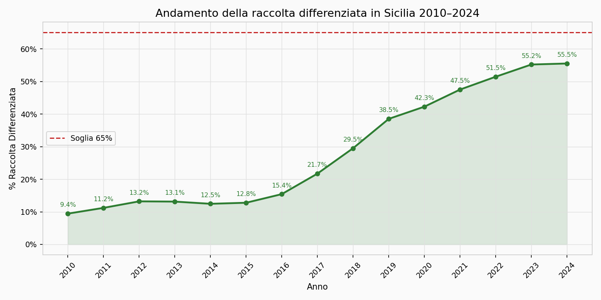
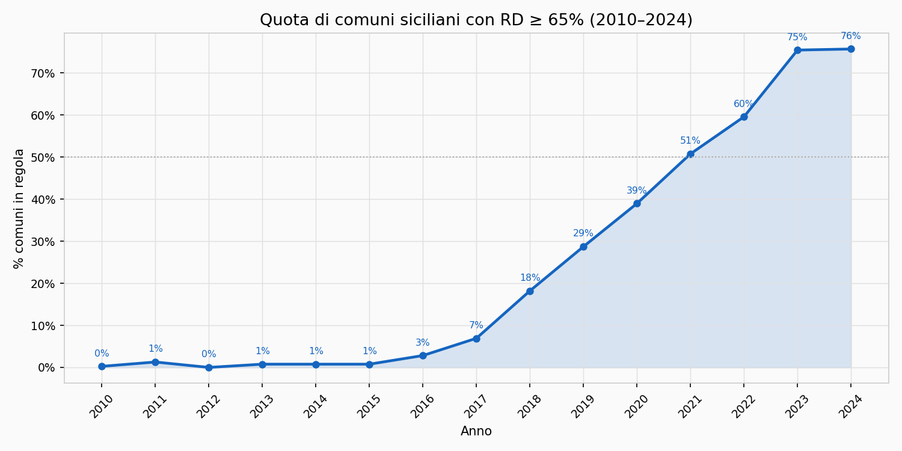
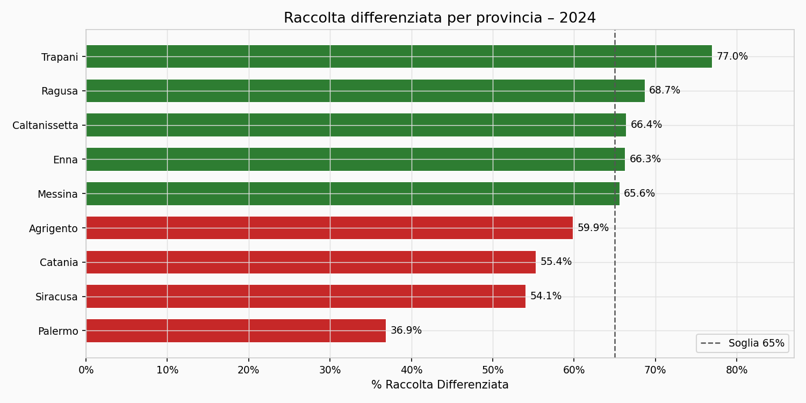
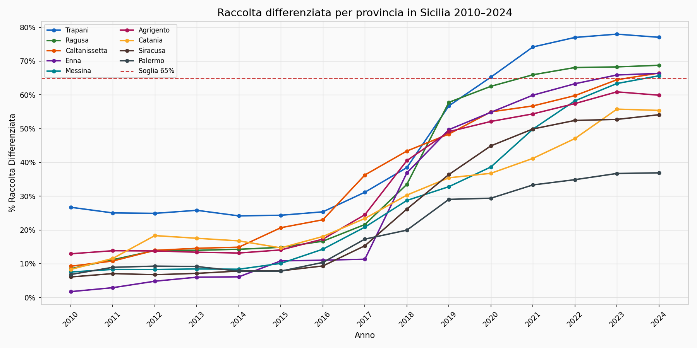
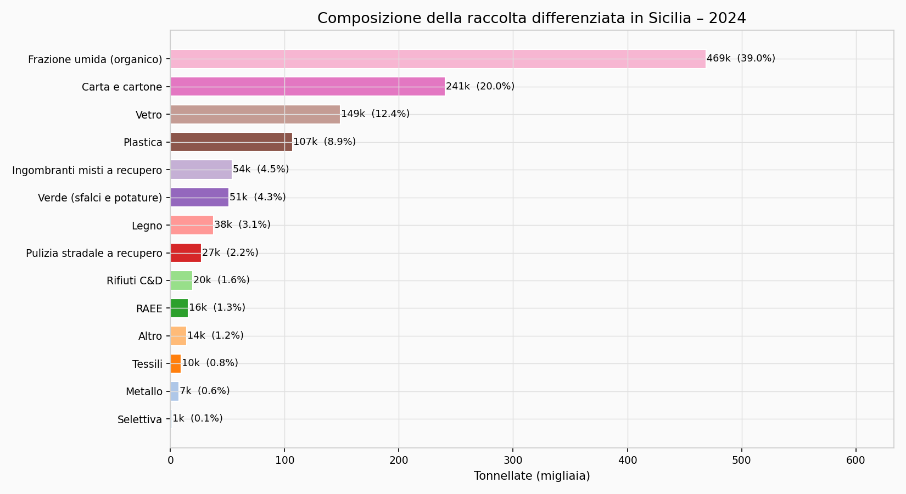
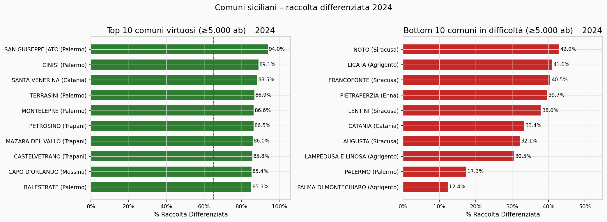

Analisi Raccolta Differenziata
Comuni della Sicilia · 2010–2024
–
Comuni
–
Media RD
–
≥ 65%
Mappa interattiva della percentuale di raccolta differenziata dei rifiuti urbani nei comuni siciliani, dal 2010 al 2024.
Il colore indica la percentuale di raccolta differenziata:
rosso (bassa RD) →
giallo (media) →
verde (alta RD).
La soglia di legge per i comuni italiani è 65%.
Dati elaborati da file CSV ISPRA, unione anni 2010–2024.
Web app progettata e sviluppata da @gbvitrano in collaborazione con Claude AI (Anthropic), che ha affiancato le scelte architetturali, l'ottimizzazione del codice e lo sviluppo delle funzionalità di visualizzazione geospaziale.
I contenuti di questa applicazione sono rilasciati sotto licenza CC BY 4.0 – Attribuzione 4.0 Internazionale. Sei libero di condividere e adattare il materiale per qualsiasi scopo, anche commerciale, a condizione di citare adeguatamente la fonte.
Cosa raccontano davvero i dati ISPRA su 391 comuni e 15 anni
📄 Scarica analisi integrale (PDF)Nel 2010 la Sicilia raccoglieva in modo differenziato meno del 10% dei rifiuti urbani. Nel 2024 la quota è arrivata al 55,5%: in quindici anni il rapporto si è quasi sestuplicato e l'indifferenziato avviato a smaltimento è sceso del 59%.

| Anno | Popolazione | Totale RU (t) | Totale RD (t) | % RD | RU pro-capite (kg/ab) |
|---|---|---|---|---|---|
| 2010 | 5.051.075 | 2.611.305 | 246.527 | 9,4% | 517 |
| 2014 | 5.092.080 | 2.340.950 | 291.664 | 12,5% | 460 |
| 2017 | 5.026.989 | 2.300.214 | 499.704 | 21,7% | 458 |
| 2020 | 4.840.876 | 2.151.948 | 909.544 | 42,3% | 445 |
| 2022 | 4.802.016 | 2.200.836 | 1.132.434 | 51,5% | 458 |
| 2024 | 4.779.371 | 2.168.241 | 1.203.679 | 55,5% | 454 |
La legge italiana fissa al 65% il livello minimo di raccolta differenziata per ogni comune. Nel 2010 la rispettava un solo comune; nel 2024 sono 296 su 391 (75,7%). Il salto del 2018 e quello del 2021 coincidono con i piani di efficientamento delle SRR e con le penalità sull'avvio in discarica dell'indifferenziato.

| Anno | Comuni totali | Comuni ≥ 65% | % in regola |
|---|---|---|---|
| 2010 | 388 | 1 | 0,3% |
| 2014 | 313 | 3 | 1,0% |
| 2017 | 389 | 27 | 6,9% |
| 2018 | 375 | 71 | 18,9% |
| 2020 | 378 | 152 | 40,2% |
| 2022 | 363 | 233 | 64,2% |
| 2024 | 391 | 296 | 75,7% |
Cinque province su nove superano oggi la soglia di legge. Il dato di Palermo merita una sottolineatura: pesa per quasi un terzo dei rifiuti dell'isola ed è il più indietro. Senza Palermo, la Sicilia nel 2024 sarebbe a circa il 62%.

| Provincia | % RD 2024 | Stato |
|---|---|---|
| Trapani | 77,0% | 🟢 Oltre la soglia |
| Ragusa | 68,7% | 🟢 Oltre la soglia |
| Caltanissetta | 66,4% | 🟢 Oltre la soglia |
| Enna | 66,3% | 🟢 Oltre la soglia |
| Messina | 65,6% | 🟢 Appena oltre |
| Agrigento | 59,9% | 🟡 Sotto la soglia |
| Catania | 55,4% | 🟡 Sotto la soglia |
| Siracusa | 54,1% | 🟡 Sotto la soglia |
| Palermo | 36,9% | 🔴 Molto sotto |

Le 1,2 milioni di tonnellate raccolte separatamente nel 2024 sono dominate dall'organico (39%), seguito da carta e cartone (20%), vetro (12%) e plastica (9%).

| Frazione | Tonnellate 2024 | Quota su RD |
|---|---|---|
| Frazione umida (organico) | 469.004 | 39,0% |
| Carta e cartone | 240.641 | 20,0% |
| Vetro | 149.000 | 12,4% |
| Plastica | 107.195 | 8,9% |
| Ingombranti a recupero | 54.050 | 4,5% |
| Verde | 51.401 | 4,3% |
| Legno | 37.809 | 3,1% |
| Pulizia stradale | 27.053 | 2,2% |
| Rifiuti C&D | 19.527 | 1,6% |
| RAEE | 15.820 | 1,3% |
| Altro | 14.116 | 1,2% |
| Tessili | 9.572 | 0,8% |
| Metallo | 7.243 | 0,6% |
| Selettiva | 1.402 | 0,1% |
Considerando solo i comuni con almeno 5.000 abitanti, il primo posto va a San Giuseppe Jato (94,0%). Sorpresa: sei dei dieci più virtuosi sono in provincia di Palermo — la stessa provincia col dato medio peggiore. Il problema non è territoriale ma di scala: i grandi capoluoghi pesano e abbassano la media.

| # | Comune | Prov. | % RD |
|---|---|---|---|
| 1 | San Giuseppe Jato | PA | 94,0% |
| 2 | Cinisi | PA | 89,1% |
| 3 | Santa Venerina | CT | 88,5% |
| 4 | Terrasini | PA | 86,9% |
| 5 | Montelepre | PA | 86,6% |
| 6 | Petrosino | TP | 86,5% |
| 7 | Mazara del Vallo | TP | 86,0% |
| 8 | Castelvetrano | TP | 85,8% |
| 9 | Capo d'Orlando | ME | 85,4% |
| 10 | Balestrate | PA | 85,3% |
| # | Comune | Prov. | % RD |
|---|---|---|---|
| 1 | Palma di Montechiaro | AG | 12,4% |
| 2 | Palermo | PA | 17,3% |
| 3 | Lampedusa e Linosa | AG | 30,5% |
| 4 | Augusta | SR | 32,1% |
| 5 | Catania | CT | 33,4% |
| 6 | Lentini | SR | 38,0% |
| 7 | Pietraperzia | EN | 39,7% |
| 8 | Francofonte | SR | 40,5% |
| 9 | Licata | AG | 41,0% |
| 10 | Noto | SR | 42,9% |